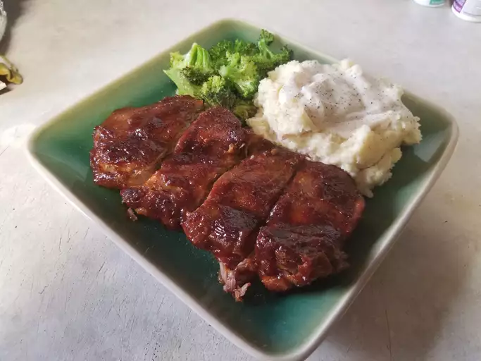

Guacamole

Description
This BBQ ribs recipe may be different than others you've tried, but for super tender ribs, give it a try!
Lean, country-style pork ribs are boiled in seasoned water until tender, then finished up in the oven under a blanket of your favorite barbecue sauce as they bake to perfection.
That's it! Back to simplicity, back to country life.
BBQ Ribs Ingredients:
- Country-style pork ribs: 2 ½ pounds
- Salt: 2 tablespoons.
- Garlic powder: 1 tablespoon.
- Black pepper: 1 teaspoon.
- Barbecue sauce: 1 cup.
Preparation
- Place ribs in a large pot and cover with water.
Stir in kosher salt, garlic powder, and pepper, and bring water to a boil over medium heat.
Continue to boil until ribs are tender, 40 to 45 minutes.
- While the ribs are boiling, preheat the oven to 325 degrees F (165 degrees C).
- Remove ribs from the pot, and place them in a 9x13-inch baking dish.
Pour barbecue sauce over ribs. Cover the baking dish with aluminum foil.
- Bake in the preheated oven until the internal temperature of the pork has reached 160 degrees F (70 degrees C), 1 to 1 1/2 hours.